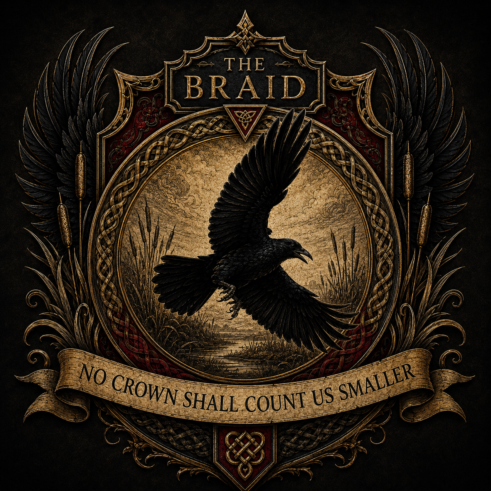
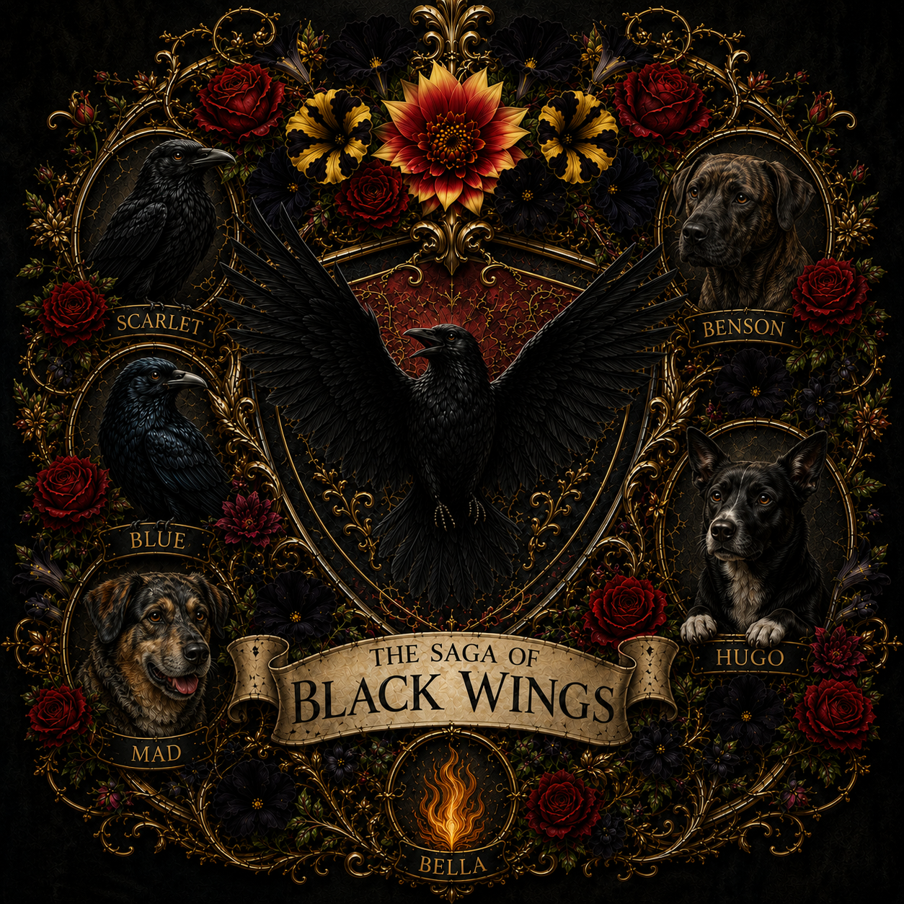

The Main Saga
The Saga of Black Wings
Twenty planned volumes, each with its own title and storyline. Explore the books in reading order, without spoilers.
Explore the Twenty BooksThe Official Saga Map-Room
Ravens circle above forgotten roads. Wolves guard the hearth. Ancient laws stir beneath the salt-marsh, and a wounded company discovers that chosen family can become stronger than any crown.
“No crown shall count us smaller.”

Book I · The First Road
The journey begins beneath ravens, through salt-marsh law, difficult mercy and the first gathering of the Braid.
In Vardrum, roads remember who crossed them. But a road cannot tell you what someone will do when the Crown demands they kneel.

The Books
The Main Saga
Twenty planned volumes, each with its own title and storyline. Explore the books in reading order, without spoilers.
Explore the Twenty BooksIndividual Stories
Individual books turn the spotlight on the people and companions who make the Braid. Their stories have a place of their own, separate from the twenty numbered volumes.
Explore the Braid BooksAlso in Development
Timothy M Halliday is also developing The Saga of Forgotten Roads, a separate fantasy saga.
Welcome to Vardrum
The Saga of Black Wings is a dark epic fantasy about people who refuse to let those in power decide who they are or whom they love.
It is a world of ravens, wolves, hidden houses, salt roads, ancient bargains, animal witnesses, dangerous mercy and chosen family forged beneath pressure.
Here, love is not decoration. It is shelter, oath, witness, rebellion and sometimes war.
“A name remembered is a door the dark cannot fully close.”
Choose Your Road
Find the books, meet the witnesses or take a road deeper into Vardrum.
The Reading Road
Discover the twenty titles and spoiler-free story introductions.
Open the BooksThe Living Braid
Meet the survivors, lovers, families, companions and animal witnesses of Black Wings.
Meet the CharactersThe Dark Names
Enter a spoiler-free gallery of crowns, roots, false mercy and cold houses.
Enter the GalleryThe Roads Beyond
Walk through Vardrum, Witness Isle, the Salt-Marsh and Green Deer-Wood.
Enter the WorldThe Remembered Words
Discover old laws, witness marks, prayers, traditions and warnings.
Read the LoreThe Skald-Room
Read odes, songs, epitaphs, prayer-leaves and beast verses.
Open the OdesThe Painted Road
Follow the known roads, islands, marshes, woods and hidden places of Vardrum.
Open the MapsThe Witness Hall
Explore crests, shields, banners, birds, beasts and spirit flame.
Visit the ArchiveBehind the Wings
Meet Timothy M Halliday, the author behind the world of Black Wings.
Meet the AuthorThe Names Behind the Page
Meet the people and animals whose lives helped shape the saga.
Read the DedicationsThe Heart of Black Wings
The Braid is not a crown, bloodline or institution. It is a living bond between people who choose one another freely and continue choosing one another when the road turns cruel.
It holds warriors, survivors, lovers, children, families, neighbours, beasts, birds, spirits and remembered names.

Those Who See
The animals of Black Wings warn, judge, remember, protect and interrupt. Often they understand the truth long before the people do.
Crow Witness
Calm, sharp-eyed and seldom impressed. Scarlet watches before deciding whether anyone deserves her trust.
Raven Witness
Inquisitive, iridescent and impossible to ignore. Blue notices doors people hoped would remain hidden.
Hearth Companions
Dogs of loyalty, instinct and stubborn courage. Each carries a different kind of witness.
Spirit Flame
A living light of courage, memory and refusal that burns without becoming anyone’s possession.
The World Remembers
Vardrum’s roads listen, its marshes hold buried truth and its houses remember everyone who crossed their thresholds.
Living Law
These truths run beneath the saga, older and stronger than the laws written by crowns.
Songs Beneath the Story
Poetry within Black Wings carries record, warning, grief, humour, folklore, remembrance and old magic. The Skald-Room gathers odes, songs, epitaphs, prayer-leaves, beast verses and saga plates.
“Not all who witness speak with human tongues.”
The Names Behind the Page
Some names stand behind every road in Black Wings. Vanessa, Stephanie, Maisie and Kian are part of the living heart behind the saga: love, courage, belief, memory and the reason the books finally stepped beyond the locked room.
Professional Contact
For publishing enquiries, representation interest or professional contact:
Where the Road Opens
“The map ends only where courage stops drawing.”